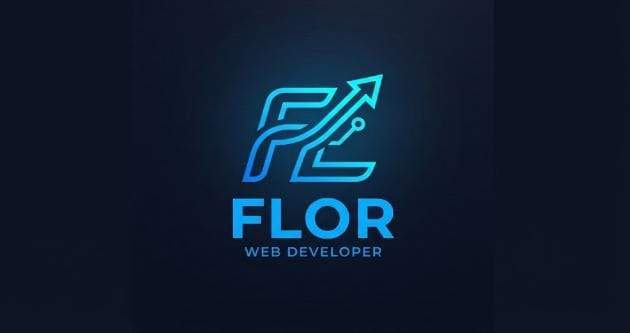

Web Responsive
Tu sitio se adapta a celulares, tablets y computadoras.

Diseño y desarrollo sitios web modernos, responsive y funcionales, pensados para que tu proyecto se vea profesional y conecte con sus clientes.
No hago solamente páginas web. Creo herramientas digitales pensadas para que tu proyecto tenga una presencia profesional y funcional.
Tu sitio se adapta a celulares, tablets y computadoras.
Una web creada alrededor de tu marca, tus colores y tu identidad.
Una experiencia clara para que tus visitantes encuentren lo que necesitan.
Cada negocio tiene necesidades diferentes. Conocé las soluciones que puedo ofrecerte y conversemos sobre la mejor opción para tu proyecto.
Tu página web lista para mostrar tus productos o servicios, generar confianza y recibir consultas.
Ayuda práctica para organizar, actualizar y mantener tus herramientas digitales.
Una identidad visual sencilla y profesional para acompañar tu proyecto en internet.
Reviso tu página para mejorar su presentación, funcionamiento y visibilidad online.
Estas son algunas formas de trabajar. Podemos adaptar cada propuesta según tus objetivos, contenidos y funcionalidades.
Una presencia online profesional, clara y directa.
Una solución integral para lanzar o renovar tu negocio con una imagen coherente y una web profesional.
Si ya tenés una web, podemos trabajar sobre ella para mejorar su funcionamiento y presencia digital.
¿Tenés una idea diferente? Contame qué necesitás y preparo una propuesta a medida.
Proyectos que estoy desarrollando y construyendo en mi camino profesional.
Sitio web comercial para un emprendimiento local, con diseño responsive, presentación de productos y contacto directo por WhatsApp.
Ver proyecto ↗Sitio web y carta digital interactiva para un negocio gastronómico local. Proyecto demostrativo.
Ver proyecto ↗Proyecto web demostrativo para una empresa de eventos, pensado para presentar servicios y facilitar el contacto con clientes.
Ver proyecto ↗Conocé un poco más sobre la persona detrás de cada proyecto.
Soy desarrolladora web y creadora de soluciones digitales. Me interesa acompañar a emprendedores, comercios y profesionales a construir una presencia online clara, funcional y alineada con su marca.
Trabajo con HTML, CSS y JavaScript, y continúo aprendiendo y desarrollando proyectos para ampliar mis habilidades.
Mi objetivo es transformar ideas en herramientas digitales útiles y ayudar a que cada proyecto pueda mostrarse con confianza.
Estructura y contenido web.
Diseño, estilos y adaptación responsive.
Interactividad y funcionalidades.
Publicación y alojamiento de proyectos.
Contame qué necesitás y preparemos juntos el próximo paso de tu proyecto.
Escribime para contarme tu idea. Voy a conocer tus necesidades y preparar una propuesta acorde a tu proyecto.